محاكي غرفة العمليات ثلاثي الأبعاد
يتدرّب فيه طالب الطب والتمريض داخل غرفة عمليات افتراضية، بيديه، وبجانبه طبيب مشرف.
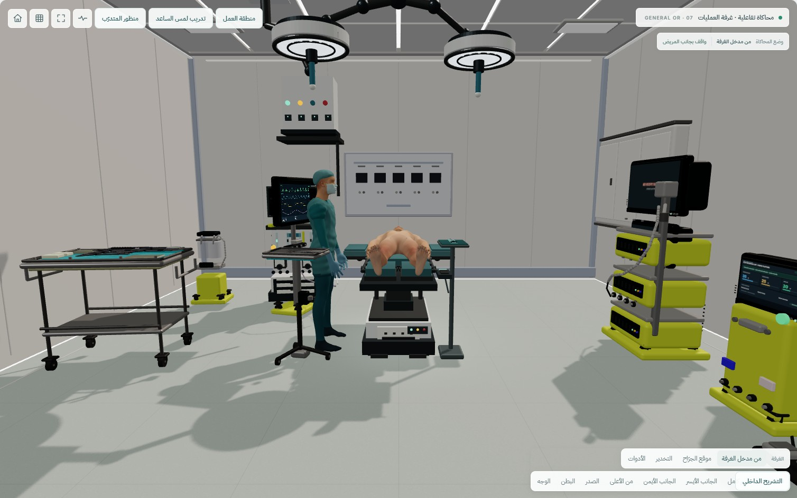
اسحب للأعلى للمتابعة · أدِر الهاتف لترى الصور أكبر
المتدرّب داخل الغرفة، لا أمام شاشة أزرار
أمامه مريض افتراضي على طاولة العمليات، وبجانبه طبيب مشرف. يتعلّم بالملاحظة والسؤال واتخاذ القرار.
- ١يتعلّم بيديه: يلمس المريض، ويحرّك أطرافه ضمن حدود المفاصل، ويمسك الأدوات ويوجّهها.
- ٢المشرف يقود: يوجّه ويشرح ويسأل، ويتدخّل بيده عند الحاجة.
- ٣فريق كامل: وستنضم ممرضة تستلم الطلبات وتناول الأدوات المناسبة لكل مرحلة.
- ٤الحالة تتحكّم بالغرفة: حالة المريض والأدوات والخطوة التالية مرتبطة بسيناريو واحد.
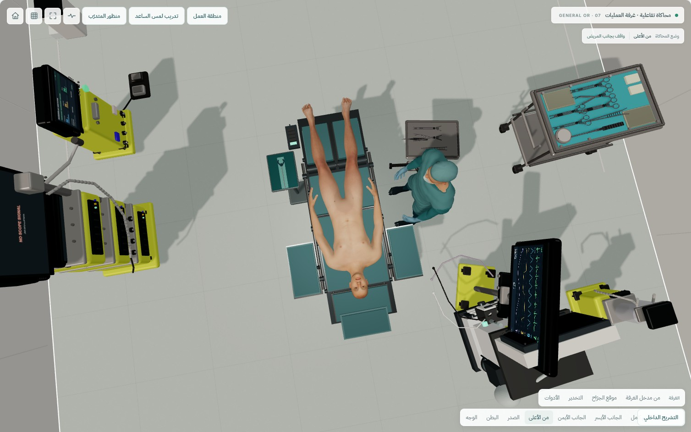
غرفة عمليات كاملة
طاولة عمليات، وإضاءة جراحية تتبع منطقة العمل، وجهاز تخدير، وبرج منظار بشاشات، ومراقب للعلامات الحيوية.
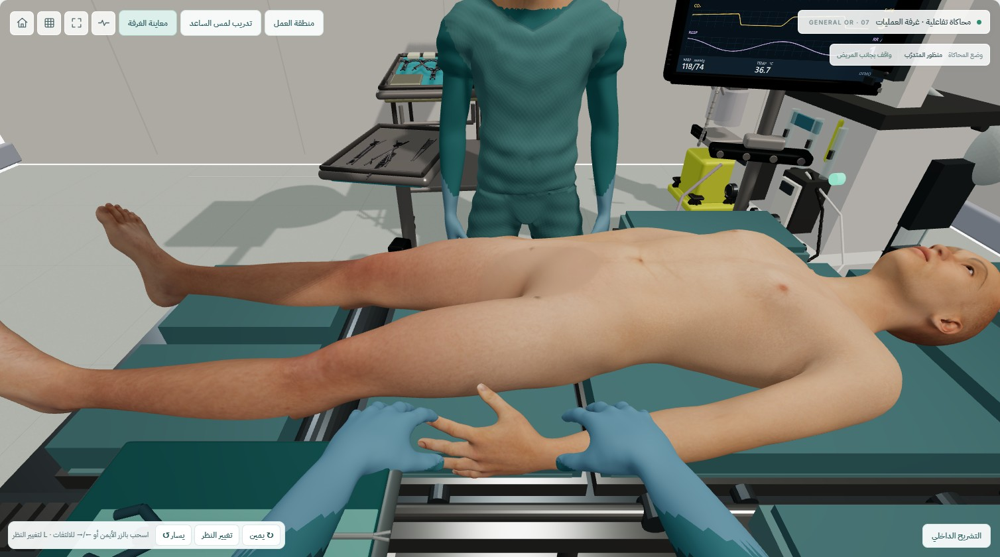
من عينَي المتدرّب
يرى المتدرّب الغرفة من موقعه بجانب المريض، ويداه أمامه في المشهد.
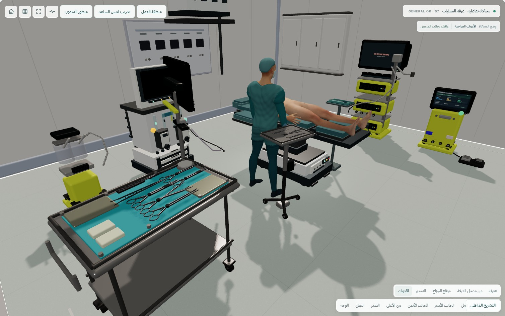
الأدوات والطبيب المشرف
ملقط المنظار، والمنظار، والمقص الجراحي، وماسك الإبرة، وبجانبها طبيب مشرف بملابس العمليات.
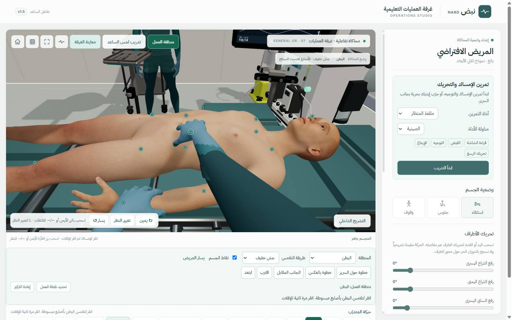
لمس البطن
يضع المتدرّب يده على بطن المريض بأصابع مبسوطة ويضغط عليه.
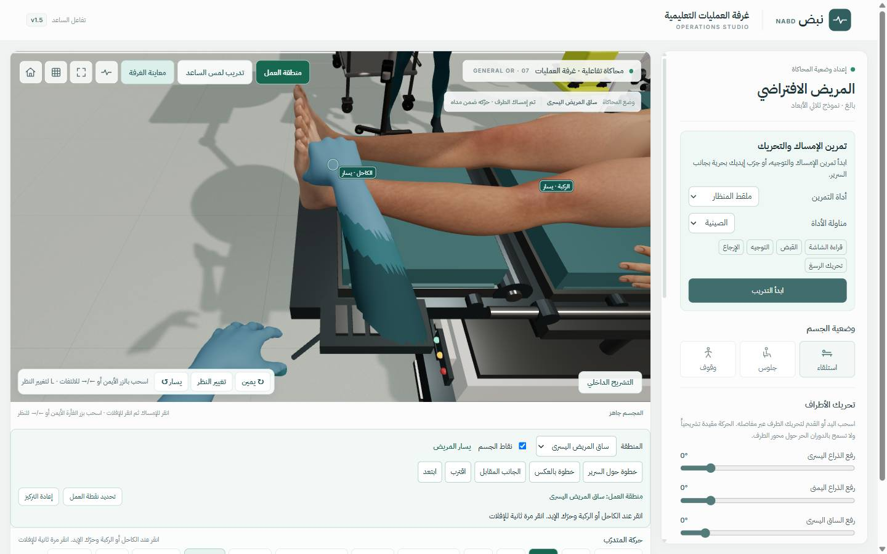
رفع الساق
يمسك الكاحل ويرفع الساق، والمفاصل مقيّدة بحدودها التشريحية الطبيعية.
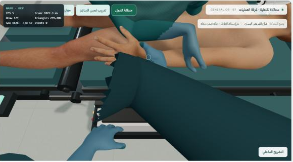
المشرف يتدخّل بيده
يسند الطبيب المشرف ساعد المريض، ويتدخّل عند الحاجة كما في الغرفة الحقيقية.
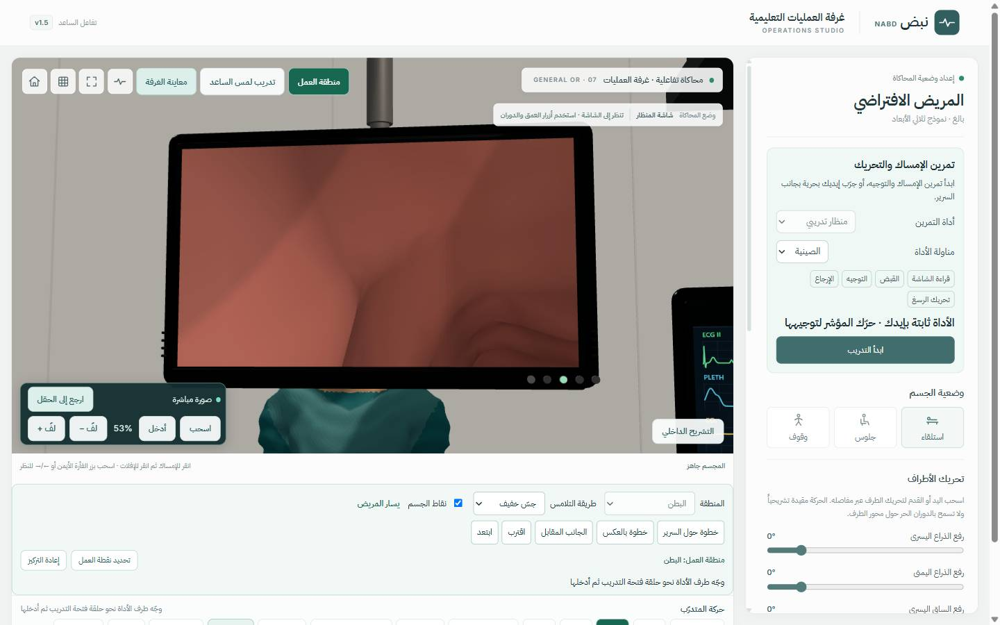
صورة المنظار الحية
يدخل المنظار من منفذ في البطن، وتظهر صورته مباشرة على الشاشة.
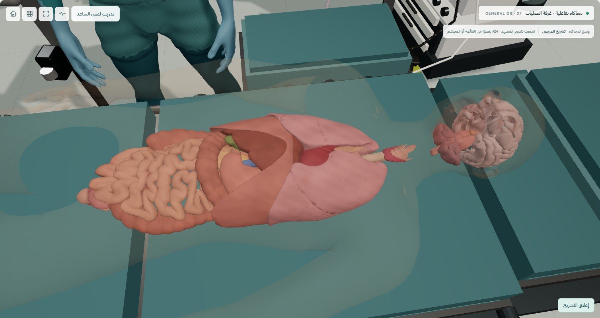
التشريح الداخلي
أطلس من 35 عضواً وبنية داخل جسم المريض.
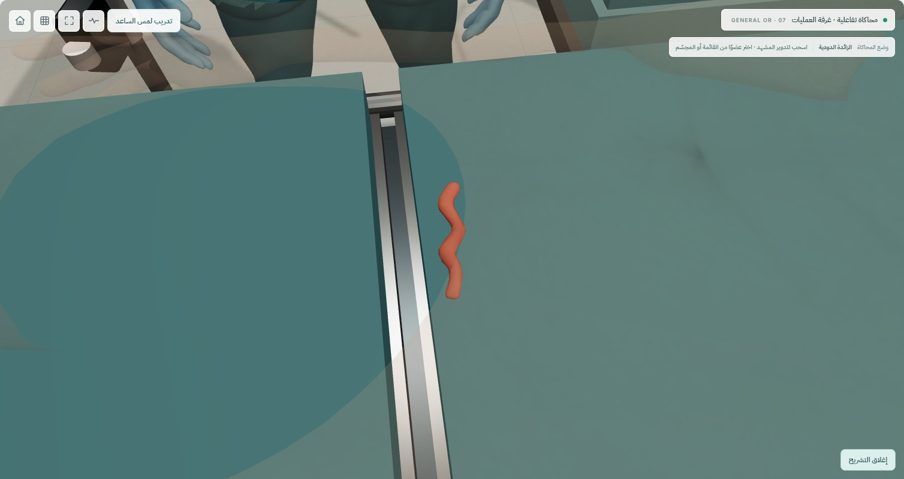
الزائدة الدودية
يمكن عزل أي عضو لدراسته. والحالة الأولى المخطَّط لها: التهاب الزائدة الدودية.
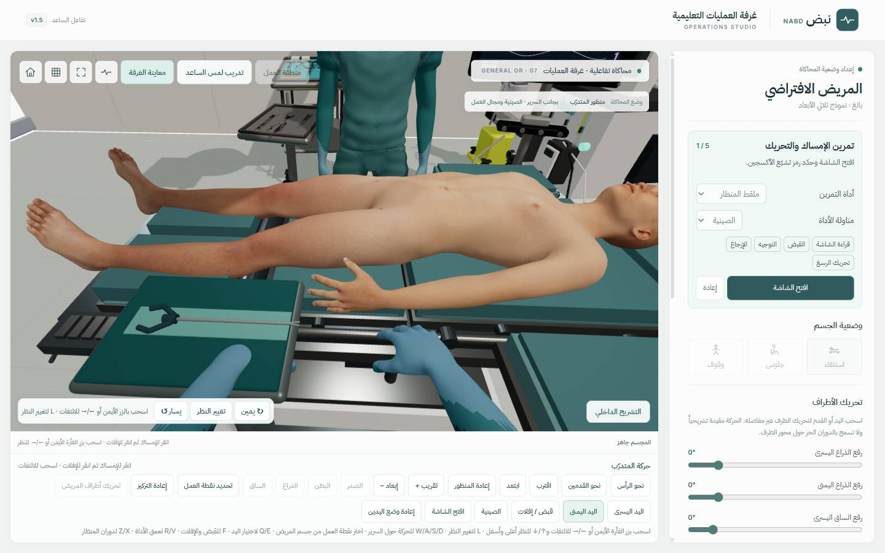
تمرين من خمس خطوات
قراءة الشاشة، ثم الإمساك، ثم التوجيه، ثم الإرجاع، ثم تحريك الرسغ.
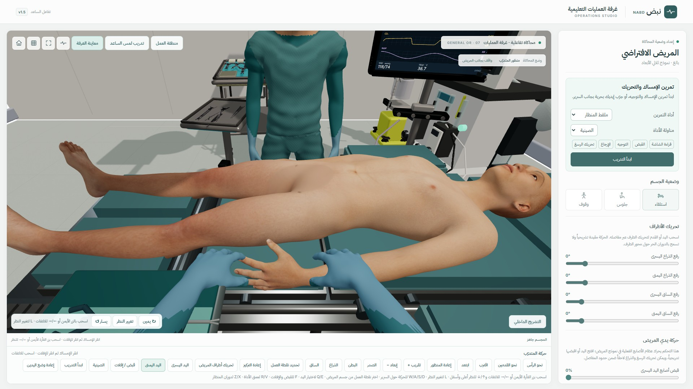
يعمل في المتصفح
المشهد ثلاثي الأبعاد مع أدوات التحكم، دون أي تثبيت.
إلى أين نتّجه
- ١جسم كامل للمتدرّب: الكاميرا عند عينيه، وذراعاه متصلتان بكتفيه.
- ٢الإمساك من أي مكان: يمسك المريض من أي موضع ويحرّكه بواقعية، دون أن تغوص اليد في الجسم. قيد التطوير الآن.
- ٣ممرضة بملابس ولون مختلفين.
- ٤محادثة جانبية مع الطبيب والممرضة، يشغّلها نموذج نبض اللغوي.
- ٥سيناريو الزائدة الكامل: من تقديم الحالة إلى الإجراء والتقييم الختامي.
- ٦غرفة وأجهزة أكثر واقعية.
المحاكي يعمل الآن في المتصفح
افتحه وتجوّل في الغرفة، والمس المريض، وحرّك أطرافه.
khamees06.github.io/nabd/or-simulator
التجربة التفاعلية الكاملة على الكمبيوتر (Chrome أو Edge). هذا نموذج أولي، ومحتواه السريري توضيحي، وسيُراجعه ويعتمده أطباء معتمدون قبل استخدامه في التدريب الفعلي.